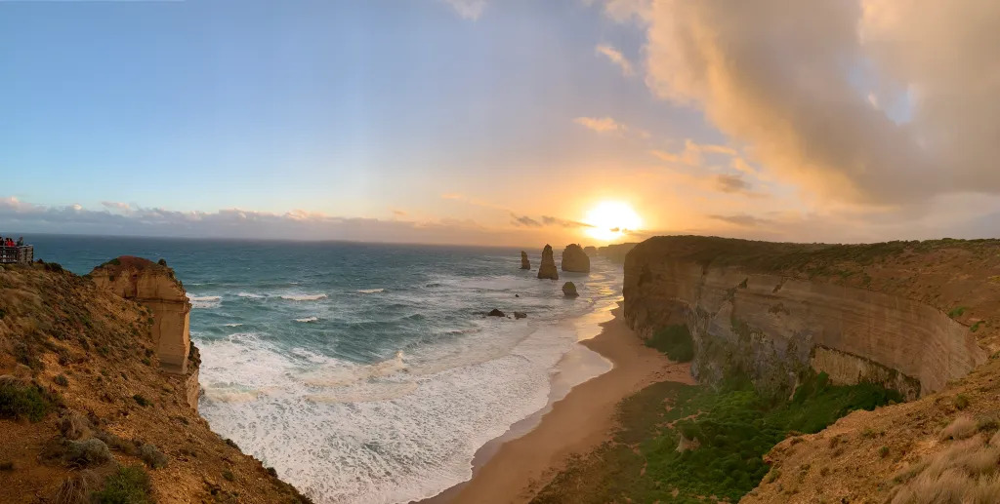

Blog
My Internship at the Australian National University
My Research Program and Application
Here I have tried to put a short description of my Summer internship experience which, hopefully, will be helpful for the pre-final year students trying to apply for research internships right now.
I spent almost 3 months as a research intern at the Research School of Physics and Engineering(RSPE) at the Australian National University(ANU) working in the laser physics department. I was funded and supported by the Jagdish Endowment Scholarship(JES). The JES scholarship is run by Dr. Jagdish Chennupati, an inspiring personality and a celebrated academic, whom I had the opportunity to meet in person during my stay there. The JES supports 5-6 students(from a set of countries) every year for an internship only at the RSPE in the ANU. However, after getting there I got to know that the Future Research Talent(FRT) scholarship, a University level extrapolation of and also inspired by the JES, supports interns in every field of study(other research schools) at the ANU and does not limit itself just to the RSPE.
Hence, for students not in the physics stream, FRT is a good opportunity and the physics students can apply to both the programs. Also, note that for both the programs one would need a guide/ supervisor who is willing to host you as an intern in their research group. Students can find the application link for the JES scholarship on the ANU website and the FRT applications, I believe, will be announced by the institute.
Work and Work culture
My work was based on quantum sensing using nitrogen-vacancy defects in a diamond crystal. I’m not going to bore you with the details of my project but what’s worth mentioning are the positive differences I observed in the system there relative to the system back here in India. First off, the people, in general, are much more polite and cooperative. The lab leaders and your supervisors trust you with your work and let you face the same research challenges that they are facing, which was the most exciting and challenging part for me. The place has a lot of easily accessible state of the art technologies and devices. The research there is very industry-oriented and probably hence has been able to derive a good amount of funding which is reflected in the facilities available there. Lastly, not to criticize our system but the research environment there was much more motivating and encouraging than what we experience here on campus. I got a lot more clarity about the field and the kind of research group I want to work with ahead.
Stay, Food and Traveling

Talking about my stay there, the first two and a half months I stayed in an apartment rented over Airbnb and shared by 3 other people who were all FRT interns. For the last fortnight, as my flatmates were going back to India I needed a different place to stay, and a friend from work, a local, offered to host me for the remaining period as he had a vacant room in his house. This is one of the benefits of an internship, that you get to make new friends and improve your networking, which could also prove very helpful for the future in terms of getting the guidance you need, getting to know about new opportunities, getting to know about different cultures or at least having a couch to crash on if you ever visit the place again for a few days.
For some of my time there I cooked my own meals, which was surprisingly fun. And also if you haven’t already guessed it from my being Gujarati, yes, I did take a ton of homemade packed food(lots of theplas). Not being a very good cook, I also ate outside for most of the weekends and hence got to try a variety of different cuisines like Turkish, Chinese, Thai(sucks), Mexican, etc.
The ANU is in Canberra, the capital of Australia, which is a recently developed and hence a very modern city. It has a lot of corporate areas and most foreign embassies. There are a few tourist spots and many beautiful suburbs, in the vicinity, studded with the prettiest houses. During my intern, I also visited Melbourne and Sydney and traveled across the Great Ocean Road to see the Twelve Apostles, which was the best road trip I have had so far(my sincere thanks to Shashank PM for organizing the trip). Melbourne was a busy and beautiful city which kind of reminded me of Mumbai. And Sydney was certainly one of the fanciest and liveliest cities I have lived in.
So all in all Australia was a pretty good experience for me and given the interest I had in the work there I certainly will consider applying for a Ph.D. there. For students in physics, there are a number of brilliant research groups in the RSPE where, based on one’s research interests, one should definitely consider applying for a research intern.
My Previous Research Experience
During the Summer break of 2018, I had the opportunity to work as a research intern in the CSBM Lab at IIT Madras under the guidance of Dr. Basudev Roy. I had got the internship by personally emailing the professor and not through any research program. My work was based on optical tweezers and their applications. I got a really good idea about various basic optical techniques and some advanced methods pertaining to my experiment. Apart from this, I also made some good contacts with the senior engineering students and Ph.D. students there who also helped me with my pre-final year internship application.
During the Summer break after my first year, in 2017, I stayed back in Roorkee and did an internship under Dr. Vipul Rastogi. As it was only after my first year, it wasn’t a very productive internship but during that time I got introduced to research and observed and learned a lot of things which later proved to be helpful. Also, it helped me get a recommendation from Dr. Rastogi for my application for the JES scholarship.
Having spent the first two Summers of my college life in places where the Summer temperatures were complete torment and torture I was glad that I found myself enjoying the Winters in Australia this Summer 😛